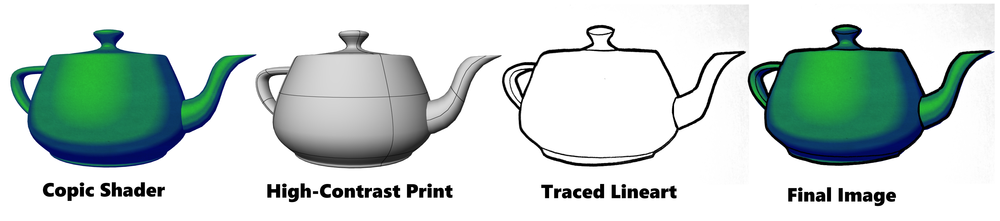
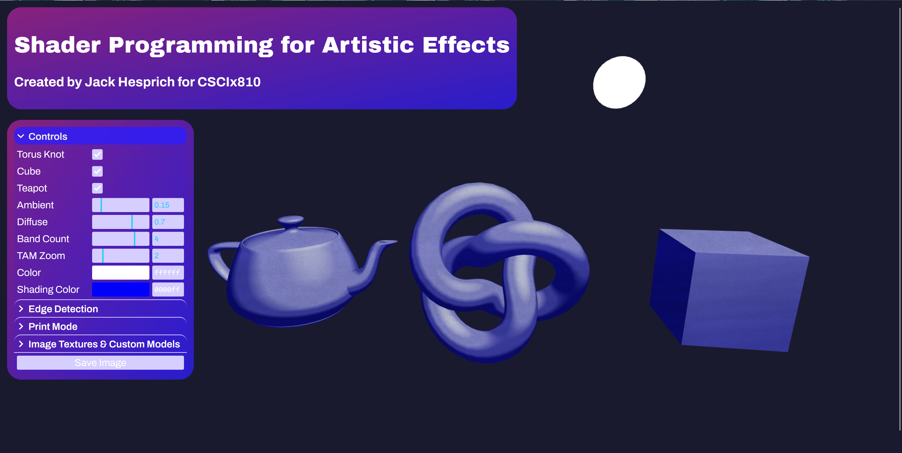
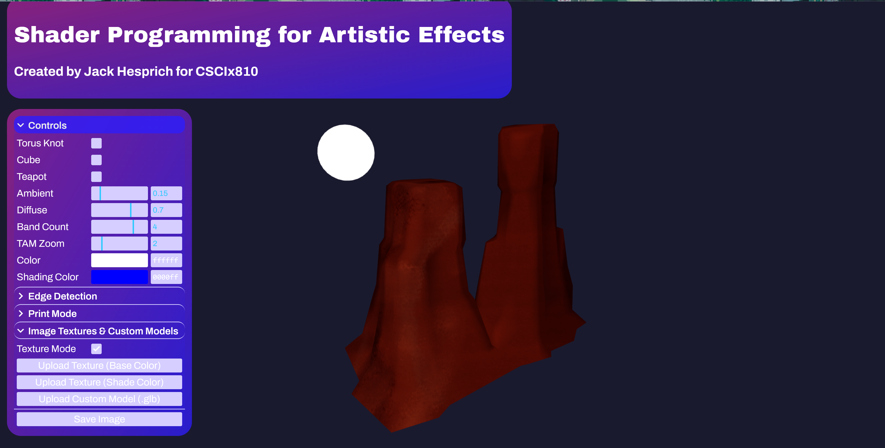
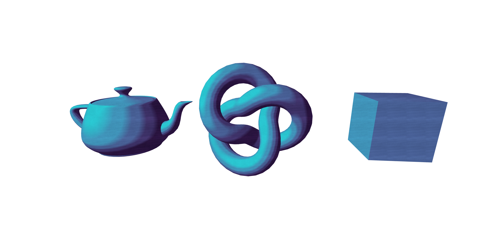
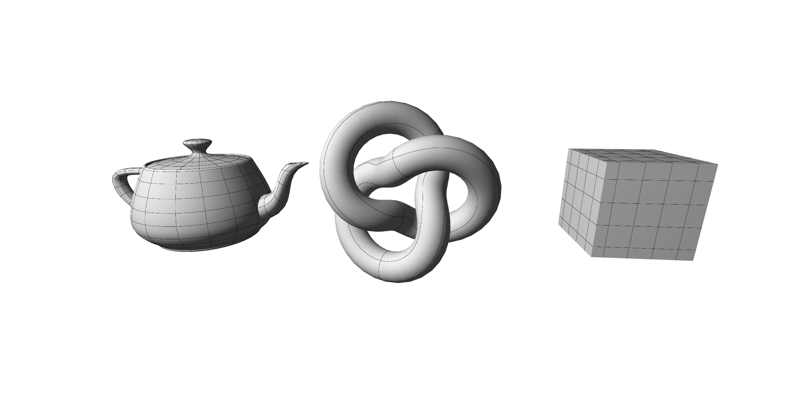

3D Modeling
I use the software Blender for my 3D modeling projects. I also taught a course on 3D animation in Blender at Emagination STEM Camps in Fairfield, CT! You can see some of my work below.


I recently created a custom GLSL shader that simulates the look of Copic Markers, inspired by the techniques described in Real-Time Hatching by Emil Praun, Hugues Hoppe, Matthew Webb and Adam Finkelstein.
You can check it out
The purpose of the shader is to create program that could import a 3D model, and export a Copic Marker shaded transparent image, as well as a high-contrast black and white image that I could print off and to trace and match my 2D art style.

3D model to 2D art style pipeline

Program Interface

3D object imported from .glb file with custom textures

Copic Marker shaded transparent image exported from program

high-contrast black and white image exported from program
I use the software Blender for my 3D modeling projects. I also taught a course on 3D animation in Blender at Emagination STEM Camps in Fairfield, CT! You can see some of my work below.